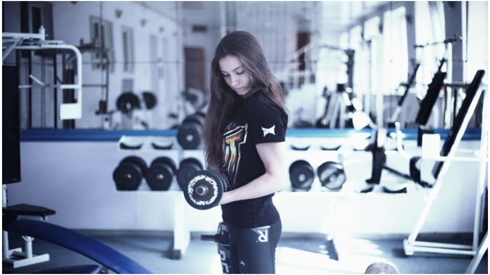

Atrofia muscular na quarentena.
Especialista afirma que devemos ter cuidado durante a quarentena.
Por Giulia Pugliese

A prática da atividade física, mesmo aquelas que fazíamos após muita reclamação, faz falta a
todos nós. Essa rotina tem destruído cotidianos em todos os lugares do mundo. Pessoas
deixaram de cuidar do próprio corpo em virtude da pouca prática de exercícios. Tal realidade faz
com que tenhamos uma pequena noção do que passam as pessoas acometidas pela atrofia
muscular. Uma síndrome que os jornalistas do Boina News conheceram mais de perto com o
auxílio da especialista, Dra. Aline Pugliese, fisioterapêuta. Profissional do Hospital Salvalus – SP,
a Dra. Aline é uma das responsáveis pela UTI reservada para pacientes acometidos pela COVID-19. Confira!
Boina News: O que é a atrofia muscular?
Dra. Aline: Atrofia muscular é causada principalmente por falta de uso ou movimento de um
determinado músculo ou grupo muscular. A Atrofia muscular é a perda de força muscular
devido a perda de massa muscular devido ao desuso, esse músculo que entra em desuso, perde
a função de contração gerando falta de força ou até mesmo movimento.
Boina News: Quais as consequências da atrofia muscular e da obesidade no corpo humano?
Em que elas nos prejudicam no dia-a-dia?
Dra. Aline: A obesidade é considerada um fator de comorbidade, a pessoa obesa tem tendência a
não praticar exercícios ou não se movimentar, ficando sentada ou deitada a maior parte do
tempo, gerando assim atrofias. A obesidade, no cotidiano, não gera somente problemas de
atrofia, tem outros riscos de saúde que o obeso corre: problemas circulatório, cardiovasculares,
enfim... A Atrofia no dia a dia impede a pessoa de fazer suas atividades diárias sem qualidade.
Ou até mesmo as pessoas não conseguem ter uma vida independente.
Boina News: Quais as consequências da obesidade para a saúde dos órgãos do ser humano?
Dra. Aline: A obesidade acarreta com acúmulo de gordura no fígado, no coração, pode gerar
trombose, enrijecimento das artérias ou veias, prejudicando sistema circulatório, pode causar
problemas respiratórios a obesidade é uma doença que afeta o sistema ou organismo como um
todo .
Boina News: Como evitar a atrofia muscular?
Dra. Aline: A Atrofia muscular pode ser evitada de diversas formas, isso vai depender do caso
que estamos cuidando, uma pessoa que trabalha o dia todo sentado, poderá ter uma atrofia em
musculatura extensora então indicamos que a cada 2 horas a pessoa levante e alongue. Pessoas
em casos mais graves, em hospitais, usamos técnicas de cinesioterapia para evitar esses
encurtamentos que são gerados pela falta de movimento.
Boina News: Como profissional, que conselhos você pode dar aos leitores sobre como combater
a obesidade?
Dra. Aline: Um conselho, mantenham-se ativos, mesmo que dentro de casa, exercícios e
movimentos só trazem benefícios ao organismo como um todo . Alimentação balanceada e
adequada é a melhor aliada. Sem restrições extremas, e sem excessos.
Boina News: Como podemos reverter a atrofia muscular?
Dra. Aline: Para atrofia muscular vinda de um processo neurológico usamos a estimulação
elétrica para estimular o sistema nervoso periférico, nos casos de atrofia muscular de causas
neurológicas, ganhamos força do músculo atrofiado aos poucos com exercícios ativos assistidos,
ativos resistidos com o objetivo de ganho de fibras musculares e ação muscular total em sua
contração .
Boina News: É possível reverter a atrofia muscular sem o auxílio de um profissional?
Dra. Aline: Não. Reverter uma atrofia, com qualidade sem gerar dores ou qualquer outro tipo de
prejuízo, não. Precisa inevitavelmente do auxílio de um profissional.
Boina News: Você já teve pacientes com caso de atrofia muscular? Como você resolveu?
Dra. Aline: Sim. Já vivenciei casos de atrofia decorrente de hospitalização por tempo longo, o
paciente não conseguia vencer a força da gravidade com os membros atrofiados. Foi feito
trabalho de alongamento e trabalho de cinesioterapia. O tratamento durou seis meses e tivemos
a reversão do quadro clínico.
Boina News: Você já teve casos de pós-operatório de pessoas que fizeram alguma cirurgia para
resolver o problema da obesidade? Como foi o procedimento?
Dra. Aline: Sim. Casos de cirurgia bariátrica, o último caso a paciente após perder 90 kg, teve
que fazer cirurgias estéticas, como redução de pele, gerando processos de repouso prolongados .
Em toda a cirurgia para redução de peso, é indicado caminhar aos poucos sem excessos e iniciar
uma vida com exercícios físicos para que não haja regressão.
Boina News: Em sua opinião profissional, você recomenda o emagrecimento por meio de
cirurgias ou por meio natural (fazendo dietas e exercícios físicos)?
Dra. Aline: Como profissional, acredito que existem casos que podem ser revertidos com dietas e
exercícios físicos, porém já casos em que a cirurgia é a melhor escolha, o que define a forma mais
segura para o paciente emagrecer são os exames, se não existe nenhum órgão comprometido
ao extremo e pode se tentar sem cirurgia, ótimo, porém tem casos que o comprometimento de
órgãos é tão grande que a cirurgia é bem vinda.
Giulia Pugliese
Jornalista - Jornal Boina News
Aluna do Ensino Médio INEC - Unid.3
Jacareí-SP
Dra. Aline Pugliese
Fisioterapeuta do Hospital Salvalus - SP